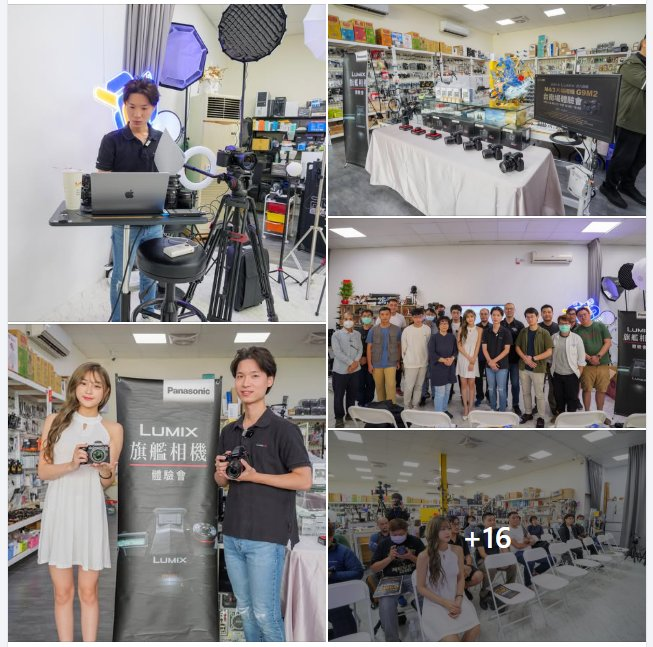
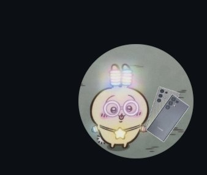
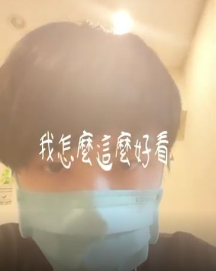
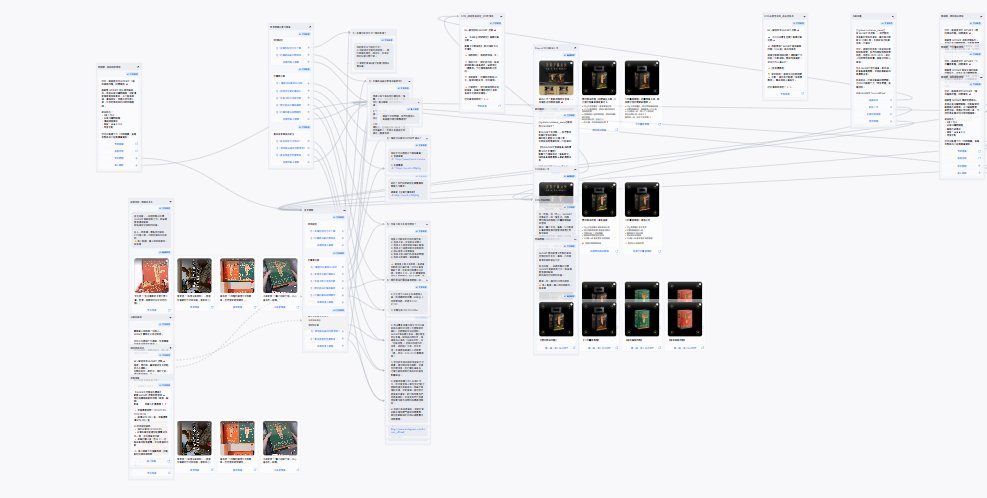

PORTFOLIO // 精選作品集
// 精選專案與實戰 Case Study
每個專案都代表了我如何拆解模糊需求、建立高效流程，並運用 Martech 自動化與專案管理能力為企業與客戶創造實質價值。

PROJECT_MANAGEMENTPanasonic LUMIX G9II 品牌體驗活動全國巡迴
擔任全程活動 PM，作為品牌與所有執行方的唯一窗口。台北、台中、高雄、台南四場巡迴，負責場地、器材、餐點、報名、現場攝影到後製剪輯全流程。
累計 200+ 參與者
查看 Case Study
PROJECT_MANAGEMENT
發現綠洲 兩天一夜媒體公關活動
在資訊不對稱的情況下主動承擔所有後勤執行。台中洲際大飯店、40 家媒體、80 萬預算，自建媒體資料表單解決進度卡關，確保活動如期完成。
80 萬預算 · 40 家媒體
查看 Case Study

STARTUP_PMS23U 手機租賃服務
從 0 到 1 自主創辦追星族手機租賃服務。研究同行弱點後針對性補強，設計合約風控、自動化客服、社群品牌形象，10 個月內完全回本。
10 月回本 · 客訴率 0%
查看 Case Study

AR_VIRALSpark AR 迷因濾鏡系列
把剪輯思維移植到濾鏡設計，借勢「我怎麼這麼好看」爆紅熱度，加入觸控互動設計。核心洞察：迷因簡單才有人用，門檻越低擴散越快。
單片 10 萬+ · 零廣告預算
查看 Case Study
AI_CREATIVE
AI 商業形象圖生成
用 AI 生圖取代傳統示意稿，把「嘴巴描述需求」變成「視覺示意稿」，縮短企劃與設計師的溝通成本。服務珍珍食品、中化健康等品牌。
商業廣告可用水準
查看 Case Study

MARTECH_AUTO虎勢 Hosset CRM LINE 自動化
為永續生活周實體活動設計完整 LINE 自動化流程。掃 QR Code → Omnichat 機器人觸發 → 自動派發折價券，全程零人工介入。
100+ 綁定 · 零人工介入
查看 Case Study
ECOMMERCE_PM
ALAIN DUCASSE 台灣電商官網
主導法國米其林名廚品牌台灣市場 Cyberbiz 電商建置。面對跨國溝通落差與素材整備挑戰，主動建立時程表、素材清單，統整商品頁、SEO 設定與版型客製。
建置中
查看 Case Study